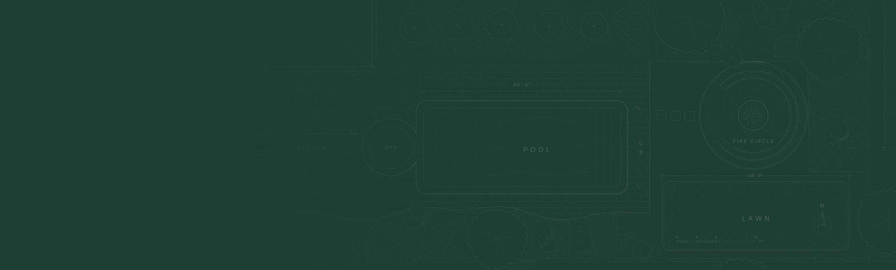
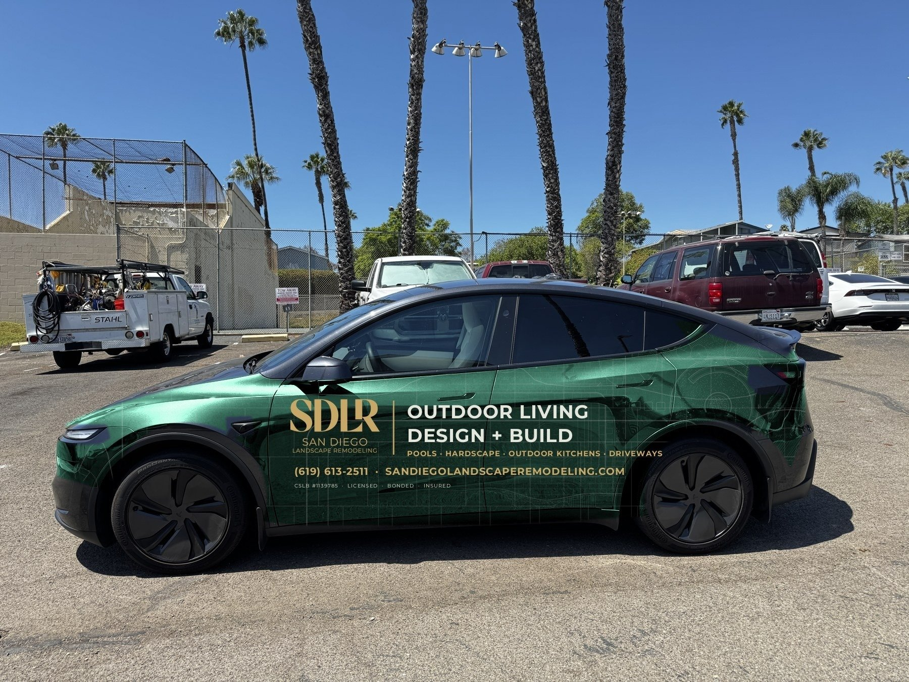
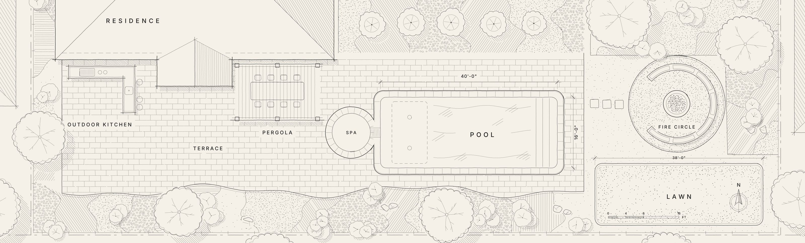

A landscape architect's plan of a finished SDLR backyard, drawn as hand-inked vector linework for the Model Y. It shows the pool and spa, running-bond terrace, outdoor kitchen, pergola, fire circle with its built-in bench, lawn panel, planting drifts and trees, with the neighbours' lot lines and rooflines at the edges. Printed one shade lighter than the body: a sheen from thirty feet, a real drawing up close.

#1E3E33. Full strength
across the rear doors and rear quarter, dissolving before the front door and the type block. The fade is a suggestion;
the master file is unfaded so it can be set on the real panels.

PDF and a 12,000 px transparent PNG are in the client folder,
02 Clients/san-diego-landscape-remodeling/Vehicle/siteplan-artwork/2026-11-19/.
| Artboard | 200.2 × 60.5 in at 100% (14,414 × 4,356 pt). Vector, so it scales to any panel. |
| Drawing scale | 1 ft of yard = 1.1 in on the car. The pool is 40 ft (44 in), the fire circle 22 ft across. |
| Line weights | 1.6 to 6.6 pt strokes. When scaling in Illustrator, keep Scale Strokes & Effects on. |
| Colour | Supplied in ink #1F1F1F. Recolour to one shade lighter than the film, roughly 15–20%. If in doubt, go subtler. |
| Layers / groups | neighbours, site, terrace, garden, lawn, shadow, pool, fire, structures, furniture, house, planting, annotation. |
| Type | Labels and dimensions are outlined (Inter Medium), so no fonts are needed. |
| Placement | Across the rear doors and rear quarter, carrying onto the hatch, clear of the type block. Nothing across a door gap onto a bumper cover. |
Version 1 · November 19, 2026